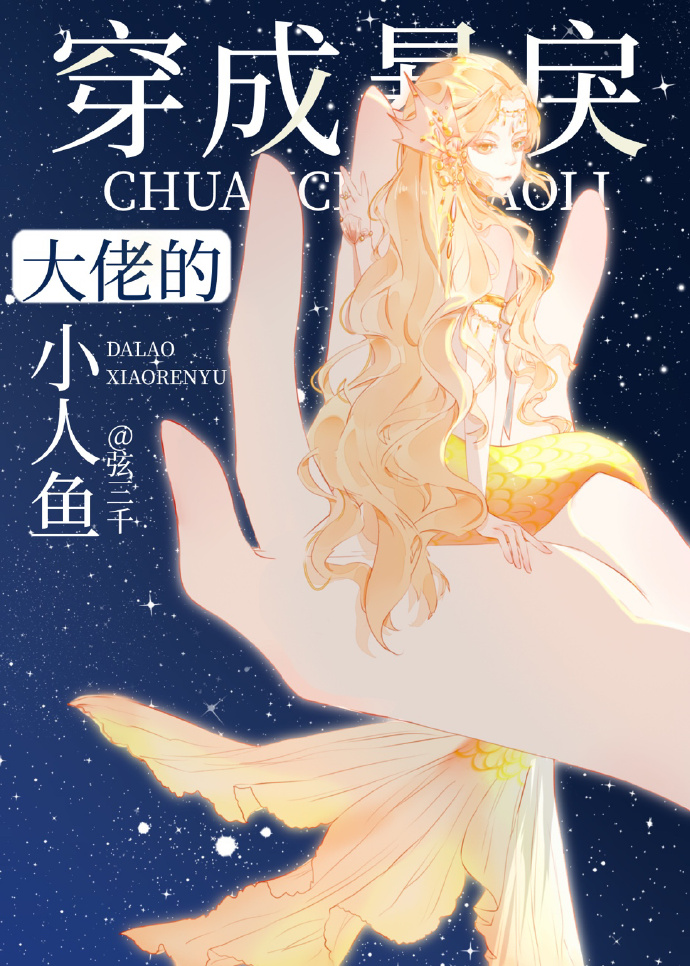

Jun Qingyu sigue una novela con un protagonista que se esfuerza por sí mismo, desde una persona común y corriente hasta un alto puesto como mariscal. Sufrió un accidente en el campo de batalla que sólo una sirena puede curar, pero debido a que la herida provocó que el protagonista tuviera un temperamento violento, las sirenas se negaron a tratarlo.
La familia del protagonista aprovechó la oportunidad para robar su ficha para iniciar una guerra interestelar. El amigo íntimo del protagonista le dio una patada cuando estaba en el suelo. Durante un tiempo, el protagonista se convirtió en blanco de críticas públicas. Era simplemente un ejemplo modelo de persona desafortunada con buena apariencia y gran capacidad.
Inicialmente, el protagonista debería haberse levantado en ese momento y haber comenzado una serie de bofetadas en la fila, pero el autor al final se escapó, dejando la novela incompleta y condenó directamente al protagonista a muerte.
Jun Qingyu quedó tan obsesionado con eso que soñó con el protagonista de este libro y, después de despertarse, se convirtió en una sirena en esa novela.
Fu Yuanchuan no sabía cuántas veces había estado junto al estanque de las sirenas. Las pequeñas sirenas recién nacidas en el estanque no tenían más que el tamaño de su palma.
Las sirenas rechazaron mucho entrar en contacto con él. Miró al grupo de sirenas, que originalmente estaban cerca de la orilla, huyendo rápidamente sin ningún accidente cuando se acercó.
El sonido de las burlas y burlas llegaba incesantemente a su oído.
'¿Cómo puede alguien como él atreverse todavía a comprar una sirena?'
"Si yo fuera él, me quedaría en casa y esperaría la muerte en lugar de correr y asustar a la gente".
Fu Yuanchuan parecía indiferente pero cuando iba a irse, escuchó una exclamación.
'¿Qué está pasando con esa sirena?'
Fu Yuanchuan miró hacia abajo y vio una sirenita de cola dorada luchando contra el grupo de sirenas para nadar hacia él. La sirenita se detuvo cuando estuvo cerca de la orilla. Levantó la cabeza y sus ojos dorados estaban llenos de su sombra.
Después de un momento de silencio, se agachó al lado del estanque de sirenas y trató de sumergir su mano en el agua...
La sirenita no huyó.
La sirenita le abrazó la mano.
La sirenita le besó el dedo.
Era como si un rayo de luz hubiera brillado en el mundo sombrío, conduciéndolo de regreso al mundo.